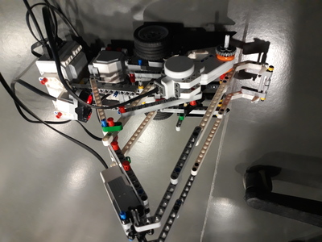
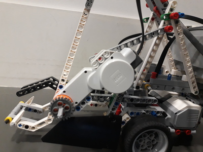

Posted for OS Project Fall 2018
We used the following devices and sensors:
The number of motors and sensors available was limited by the number of ports and by the architecture itself, as adding too many components would yield serious issues in terms of mobility, speed and precision.
For instance, we noticed that if the robot was particularly heavy the wheel’s axel would be deformed as a consequence, yielding problems such as impossibility to maintain a certain direction precisely or causing the robot to turn slightly left or right when the motors were started.
Moreover, we rapidly went to a simple and efficient solution : using a catapult to throw the balls. Moreover, we noticed that the motors would be more imprecise when it came to turn left or right if the weight over the wheels wouldn’t be evenly distributed. In order to solve these problem we tried several architectures until we achieved a satisfying one.

The adopted architecture allows to distribute the weight in a more even way
between the two wheels and the metal ball, with respect to the center of mass of
the ev3dev block and as the distance between them is approximately the same.
Also, stability is greatly improved by placing the ev3dev board in the centerd
line at the front of the robot, with respect to the axel.
This choice also allowed us to use all the available ports and to connect the color sensor
and the motor placed in the front for the catapult. Lastly, the ultrasonic sensor was mounted
in the front just under the ev3c block in order to have a clear area in front of it.
Thus we could detect with a better precision the objects arount the robot.
img class="img-fluid rounded" src="3.jpg" class="rotation90">
In order to grab a ball, the robot just have to make a 180° round. The gyroscope was placed
on top of the main structure where it is the most stable and rigid structure in order to avoid improper movements
of the gyrospcope, close to the brick itself since we noticed that this reduced vibrations and increased precision.
Placing the wheels in the front and the metal ball in the back allowed us to greatly mitigate the problem of imprecision of turning, as they now occupy a central position . Hence unwanted torques are minimized when turning, resulting in a higher precision.

The third big motor was used to turn the axle connected to two LEGO
mechanical arms mounted in the back. Turning the axle could allow us to pick up the ball placed in front of the robot.
This mechanism was exploited in order to hold and release the non movable object within the arena. This motor is used synchronously with the fourth motor in order to complete the picking up and throwing ball part.
The fourth motor was placed at the top, in order to allow the rotation of the catapult. This motor is essential. It turns rapidly and permit the robot to throw the ball 30-40 cm away from the robot . This motor opens the catapult'arm before picking up ball. Then it turns in reverse sense in order to get back at the starting position. Finally the third motor turns once again so that the ball falls in the catapult'arm. The catapult's motor turns again in order to throw the ball.
The gyroscope was mounted on top of the robot, on a stable place. We used it for recalibration purposes and in order to make the robot turn to a certain angle with a good precision For instance, we used the gyroscope to associate a certain angle to each ultrasonic sensor reading.
The ultrasonic sensor was used to scan the area from one side to another in order to detect the ball and the walls, borders and in order to locate the ball to get. Although the sensor is in principle capable of measuring distances up to 250 cm, after careful testing we realized that, past 20 cm, the sensor is not reliable any longer. This issue was most likely due to echoes from corner which would confound the sensor at distances larger than 20 cm.
We decided to make the robot stop when the distance was reached and the ball was detected by the color sensor.
After this, the robot moves backward in order to make sure that it won’t bump into additional walls or obstacles which may be around.